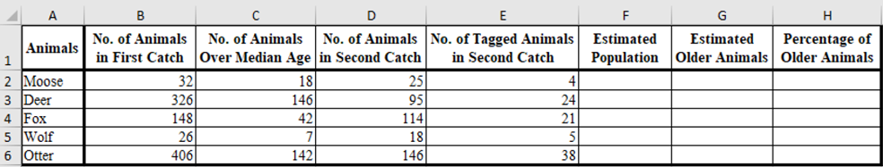
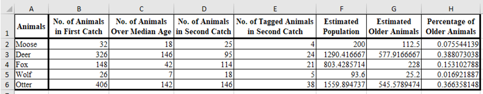
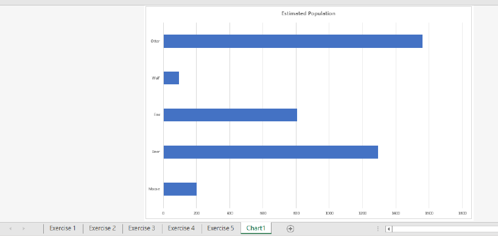
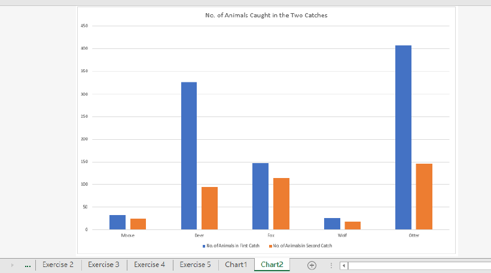
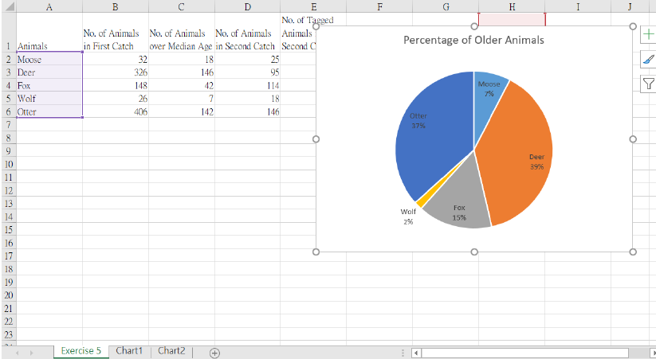

Excel Exercise 5
Naturalists trapped animals on an island, tagged them, released them, then counted the tagged animals in a second catch. Follow the sequence, tick each action as you complete it in Excel, and build a worksheet that estimates each species' population — then present the results with a bar chart, a column chart and an embedded pie chart.
Create the Exercise 5 sheet and save
Add a new spreadsheet called Exercise 5 to the same workbook as your previous exercises, then save the file with the new exercise number.
F2X_01_YourName_ex05.xlsx. The new sheet must be named exactly Exercise 5 — the pie chart will be embedded on it later.Prepare the data worksheet
Create a new spreadsheet and rename it as Exercise 5. On the Exercise 5 sheet, enter the naturalists' capture–recapture data: species names, first catch, number over median age, second catch and number of tagged animals recaptured.
Several naturalists are conducting a study of the interrelationships among five animal species on the island. The naturalists trapped animals, determined their ages, tagged the animals, and released them. Later, a second collection of animals was caught and the number of tagged animals was counted. The naturalists then tabulated/charted their data.
Data to enter
| A | B | C | D | E | F | G | H |
|---|---|---|---|---|---|---|---|
| Animals | No. of Animals in First Catch | No. of Animals Over Median Age | No. of Animals in Second Catch | No. of Tagged Animals in Second Catch | Estimated Population | Estimated Older Animals | Percentage of Older Animals |
| Moose | 32 | 18 | 25 | 4 | |||
| Deer | 326 | 146 | 95 | 24 | |||
| Fox | 148 | 42 | 114 | 21 | |||
| Wolf | 26 | 7 | 18 | 5 | |||
| Otter | 406 | 142 | 146 | 38 |

Compute the estimated values
Use formulas to work out the estimated population, the estimated number of older animals and the percentage of older animals for each species.
Formulas

Create a bar chart of Estimated Population
Select the species and the estimated population with the five animal species on the island, insert a bar chart, and move it to a new chart sheet named Chart1.
Steps

Create a column chart of the two catches
Compare the number of animals caught in the first and second catches for each species, and move the chart to a new sheet named Chart2.
Steps

A1:D6 first and then delete the unwanted series (Over Median Age) in Select Data.Create an embedded pie chart of the percentage of older animals
This chart stays on the Exercise 5 sheet as a floating object — do not move it to a chart sheet. Then change its layout so the labels and legend display clearly.
Steps

Final touches and verification
Check the numbers, chart titles, chart types, sheet names and chart positions before submitting.
Final review and submit
Double‑check everything, save, then upload your workbook to the class OneDrive folder.
📋 Marking Scheme
| Criterion | Weight |
|---|---|
| Data entered accurately (at most 5 typing mistakes) | 25% (5% each) |
| Compute all missing items | 15% (5% per column) |
| Bar chart of Estimated Population | 15% (5% each) |
| Column chart of the two catches | 15% (5% each) |
| Embedded pie chart of Percentage of Older Animals | 15% (5% each) |
| Correct 2 chart names and 2 chart positions (Chart1, Chart2, embedded pie) | 10% (5% each) |
| Other mistakes (e.g. borders, bold, alignment, etc.) | 5% |